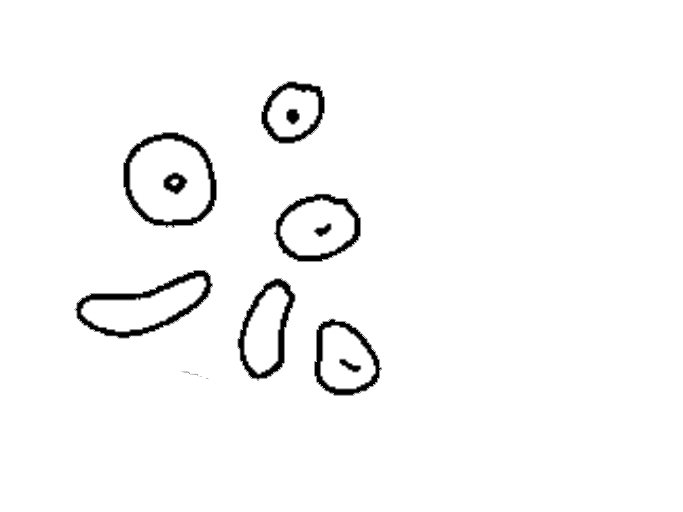

- Normal range: 0 – 2 RBCs/HPF.
• Appearance :
- Measure 7-8 μm.
- In concentrated urine may be crenated, and their size became small (5-6 μm).
- In alkaline urine, they may be small or entirely destroyed forming massive of brownish granules.

• Increase in number due to :
1. Acute and chronic glomerulonephritis.
2. Renal stone.
3. Cystitis.
4. Prostates.
5. Trauma of the kidney.
6. Presence of parasites, such as: schistosoma.
7. Presence of bacterial infection, such as: renal tuberculosis.
8. Other disease conditions, such as hemophilia, malignant hypertension.
9. Temporarily increased RBC :
- After strenuous exercise.
- Exposure to cold temperature.
• Other substances confusing with RBCs :
- Yeast cells, and fat droplets may confuse with RBCs morphologically. They may be differentiated by their morphology.
- Red blood cells are some what round or disc shaped, and uniform in size: while yeast cells are oval in shape, and have budding at the surface. On the other hand fat droplets are irregular in size and they are shiny
• How to report result:
- After looking RBCs under the 40x objective, they can be reported by mentioning the average number of RBCs/HPF.


- Also called pus cell.
- Normal range: 0 – 2 RBCs/HPF.
• Appearance :
- clear granular disc shaped, Measure 10-15 μm, the nuclei may be visible.
- In alkaline urine, they may increase their size and become irregular.
- Predominantly, polymorph nuclear neutrophils are seen.
- WBCs (pus cells) may be seen in clumps.
- It is also possible to see single irregular nuclei and small round lobed nuclei in the WBCs.
• increase in number due to:
1. Urinary tract infection.
2. All renal disease.
3. Bladder tumor.
4. Cystitis.
5. Prostates.
6. Acute or chronic bacterial infection such as renal tuberculosis.
7. temporarily increased during Fever, and after strenuous exercise.
• How to report result:
- After observing the distribution of leukocytes under 40x objective, at least 10 fields of microscope, and counting the total leukocytes in 10 HPF and divide by 10.
- Normal range: 0 – 2 RBCs/HPF.
• Appearance :
- Their size differs depending on the site from which they originated :
a. renal cells :
- Size is small as compared to other epithelial cells.
- It measures 10μ to 18 μm in length, i.e., slightly larger than leukocytes.
- Very granular.
- Have refractive and clearly visible nucleus.
- Usually seen in association with proteins or casts ( in renal disease).
b. Cells from pelvis and urethra of the kidney :
- Size is larger than renal epithelia’s.
- Those from pelvis area are granular with sort of tail, while those from urethra are oval in shape.
c. Bladder cells :
- Very large in size.
- Shape seems rectangular and often with irregular border.
- Have single nucleus.
• increase in number due to :
1. Acute tubular damage.
2. Acute glomerulonephritis.
3. Silicate over dose.
* The presence of large number of epithelial cells with large number of Leukocytes and mucus trades (filaments) may indicate Urinary Tract Infections (UTI).
• Reporting of the result :
- Epithelial cells distribution reported after looking under 10x (low power objective) of the microscope.
- Usually they are reported semi quantitatively.